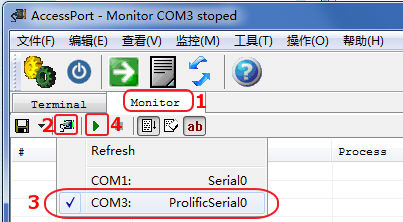
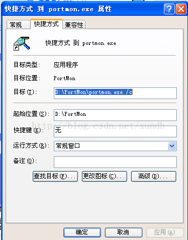
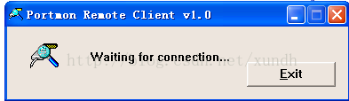
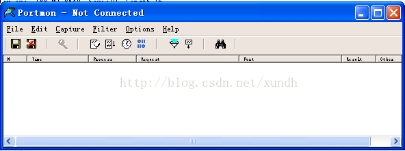
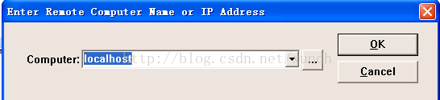
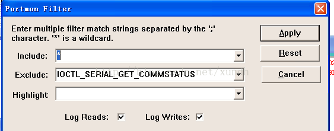
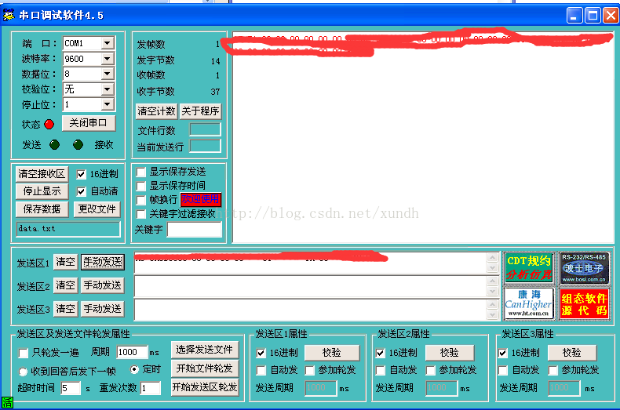
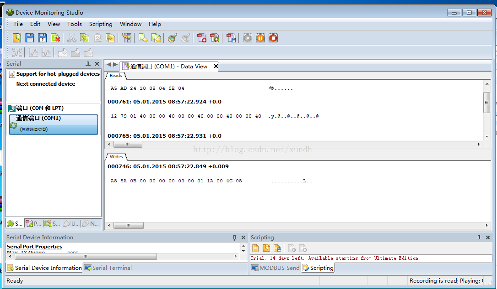
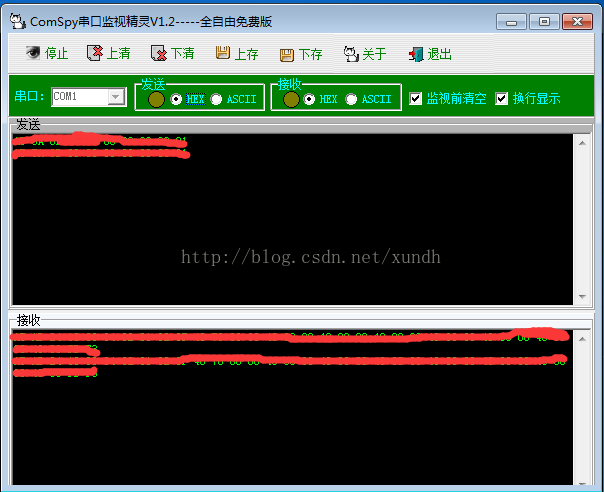

串口监控工具
AccessPort
1，串口监控工具AccessPort137：支持Win7，教程如下，以监控COM3为例，要确保COM3未被占用：

MonitorComm
MonitorComm40目前不支持Win7
微软portmon抓包工具
微软工具包Sysinternals Suite工具包监控工具之一，可惜只支持32位系统，而且最新版操作有点复杂，下面把操作步骤记录一下：
1.下载安装
地址：http://technet.microsoft.com/de-de/sysinternals/bb896644.aspx ，绿色软件，不需要安装，直接放到D:/PortMon
2.创建client
给portmon.exe创建一个快捷方式，然后按下图给它设置一个启动参数：

为了便于区分，把快捷方式命名更改为client
3.启动client
确保要监控的串口目前是没有被占用的，然后启动client，这时界面如下：

4.启动portmon
再直接双击portmon.exe，这时标题栏显示Not Connected。界面：

5.连接
按快捷键ctrl+r，输入localhost：

点OK连接，这时会提示连接成功。
从这里设置可以看出，这软件应该也支持远程调试的。不过我没有测试。
注意在监控过程中，两个Portmon窗口都不可以关闭。
6.设置
点击菜单Capture-Ports，选取要监控的串口。注意这里是复选方式，可以同时监控多个端口。
同时我们设置一下Filter-Filter/Highlight：

当然大家也可以根据自己实际需要更改Filter。
软件界面查看内容不方便，我们把输出指向到一个文档，点击File-Log to File，设置记录的文档。
这时候就可以监控串口数据了。
我这里使用ComMonitor作示例：

可以在Log里看到数据，其中发送的数据为write，接收的数据为Read。
其它的功能按钮可以设置滚动、清屏、停止监控等，比较简单不再赘述。
网上也有讲有win7、win8下可用的版本，不过我没有找到。如果大家找到希望能分享一份给我，谢谢。
我的系统是Win7，为了使用它，是建了winxp的虚拟机，虚拟机中使用物理机的串口。这个设置与本文关系不大，不再这里介绍了。
https://github.com/xcud/sysinternals-source
http://web.archive.org/web/20060427210005/http://www.sysinternals.com:80/SourceCode.html
https://micksmix.wordpress.com/2009/11/21/free-and-legal-sysinternals-source-code/ ：Before Mark Russinovich sold his company (Winternals) to Microsoft, he used to release the source code to many of his SysInternals utilities. I did some Google-ing and have found much of this code is still online at: http://sysinternals.kompjoefriek.nl/rip/www.sysinternals.com/SourceCode.html
Device Monitoring Studio
网址：http://www.hhdsoftware.com
程序截屏：

软件功能比较强大，是收费软件，免费试用15天。从截图可以看出，选择了通信端口以后，可以很轻松监控串口数据。另外从界面上看它还有数据统计等很多其它功能，我没有全部试用，就不多介绍了。需要注意一点，它的启动按钮在界面右侧下方。
Comspy
这无疑是三款软件中最好用的一款，界面非常简单。国产软件,可以从这里下载。在使用串口调试软件同步测试时，需要注意：
1.先打开Comsky，并且选取要监控的串口，点击“监视”，再打开串口调试软件。
2.串口调试软件打开后，点一下关闭串口，再打开串口。
这时候就能监控数据了，放一个使用截图：

这时候就可以监控串口数据了。